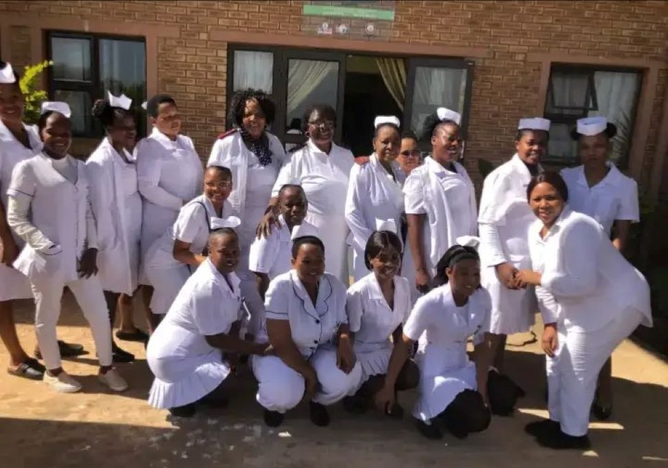

Meet the dedicated team behind Tsogang Home Base Care, committed to providing compassionate home-based care and improving community health.
Oversees operations and ensures the facility adheres to its constitution.
Manages records, correspondence, and communication within the organization.
Responsible for supporting the Chairperson in managing the organization.
Responsible for financial oversight and management of donations and funds within the organization.
Responsible for supporting the organization's operations and initiatives.
Leads the organization and coordinates health programs and community initiatives.
Established on June 4, 2008, Tsogang Home Base Care is a non-profit organization dedicated to addressing the needs of elderly individuals (aged 60 and above) and disabled residents in underprivileged areas. Guided by the Principles of the Constitution of South Africa, our mission is to provide compassionate and comprehensive home-based care to elderly beneficiaries, particularly those with various vulnerabilities. Our aim is to bring hope, safety, stability, and humanity into our township through home visits and mobile clinic services.
Tsogang Health Facility aims to provide and increase access to quality healthcare in the community.

To bring hope, safety, dignity, and human rights to individuals suffering from chronic illnesses through compassionate home visits and mobile clinic services.
To promote better health and wellness within the community by providing accessible, quality home-based healthcare services.
To employ and support community nurses who visit patients in their homes, assist vulnerable individuals, and refer patients to clinics and hospitals when necessary.
Tsogang Home Base Care is recognized as a trusted first line of support, providing reliable home-based care and emergency assistance through mobile clinics.
Our structure focuses on sustainable healthcare delivery and strong community partnerships.
We employ trained professionals to deliver home-based care, mobile clinic services, and hospital referrals while engaging communities to understand health needs.
Strong community knowledge and collaboration with nursing authorities enable us to reach patients with unmet healthcare needs.
Limited funding and equipment remain challenges, while growing healthcare needs present opportunities for partnerships and employment.
Our stakeholders include the community, clinics, government departments, volunteers, and collaborating organizations. Management ensures compliance, quality service, and ethical operations.